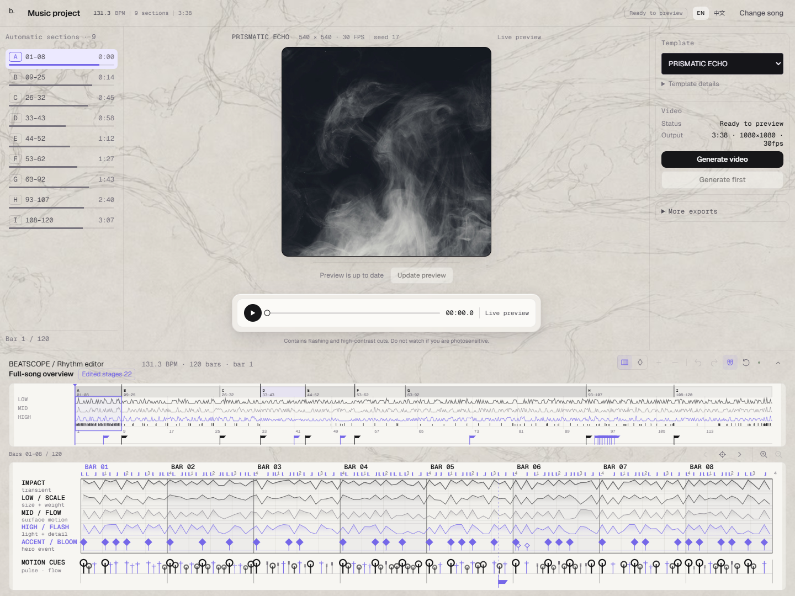
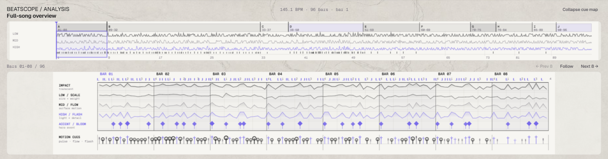
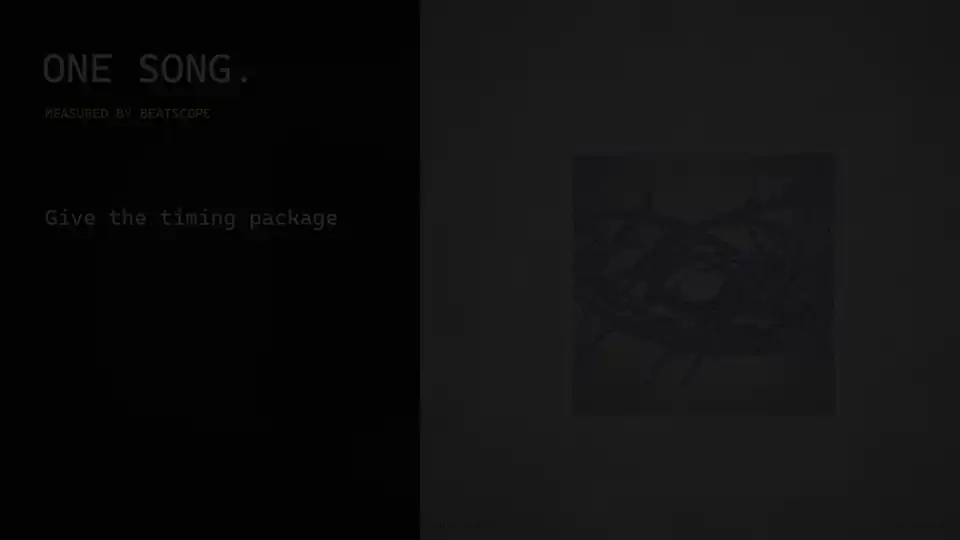

Drop in a song
- WAV
- FLAC
- MP3
- OGG
- M4A
Any track. It never leaves your machine.
Open source · Beathi Studio
Turn a song into a beat-synchronised film — or give its timing to a coding agent.
Promo — cuts timed by BeatScope's own analysis · watch with sound

Drop in a song
Any track. It never leaves your machine.
See the timing

Beats, bars, onsets — measured, never snapped onto a prettier grid.
Ship it
Render a film, export MIDI/CSV, or hand the .beatscope package to a coding agent.
Two templates:
Both render the full song to MP4 at 1080×1080 30 fps; live preview at 540×540.
Edit stage boundaries and add, move or mute cue markers on the rhythm graph, with undo/redo and optional snapping.
Prismatic Echo uses GPU composition, hardware encoding and reusable caches. Devices without the required GPU fall back to a Canvas renderer.

Export the .beatscope package and give it to an agent with your footage, images or references. It holds measured timing, not a fixed visual style, so the agent can build something new without guessing where the music hits.
.beatscope package + your media + your idearhythm-map.jsonIt does not include your audio or a visual template.
BeatScope does not pretend to know whether a sound is a kick, snare or 808. It reports evidence and lets the renderer decide.
Beathi Studio.exe.Includes the analyser, Node.js, Playwright, FFmpeg and the material pack. Rendering uses Microsoft Edge on Windows 10/11.
Download the wheel from the v0.15.0 release, then run:
pip install beatscope-0.15.0-py3-none-any.whl
beatscope serve --openFor Prismatic Echo, extract the material pack into your working directory (keep its materials/ folder) or set BEATSCOPE_MATERIAL_ROOT.
Python rendering also needs Node.js, FFmpeg, Playwright and a supported browser. See local rendering.
A local stdio MCP server for analysis and bounded timing queries.
Seven browser WebMCP tools inside Beathi Studio.
git clone https://github.com/chosuicide/beatscope.git
cd beatscope
python -m venv .venv
.\.venv\Scripts\Activate.ps1
pip install -e ".[dev,mcp]"
beatscope serve --openContributions welcome — new visual templates and timing consumers are a great place to start.